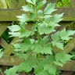

Correspondence Grimoire
Rheumatism

Lovage Root Essential OilRheumatism is a broad term for inflammatory and degenerative conditions affecting the joints, connective tissue, muscles, tendons, and ligaments, including arthritis, fibromyalgia, bursitis, tendonitis, and related autoimmune flares. Hallmarks are stiffness, aching, swelling, and reduced range of motion, often worse in cold or damp weather. Essential oil therapy works alongside medical care to ease pain, reduce inflammation, improve circulation, and support the body's drainage of metabolic waste from affected tissues.
Therapeutic Application Methods
- Massage: Dilute to 2–3% in carrier oil. Stroke gently over affected joints and surrounding muscles, working with the natural drainage of the lymph (toward the heart). Avoid acutely hot, swollen, or red joints, wait until the inflammatory phase passes, then resume.
- Compress: Add 4–6 drops to a bowl of water; soak a soft cloth, wring, and lay over the affected area for 15–20 minutes. Use cool compresses during acute flares (heat aggravates active inflammation) and warm compresses for chronic stiffness and aching.
- Bath: Add 5–8 drops dispersed in 1 tablespoon carrier oil, milk, or unscented bath salts to a warm (not hot) bath. Soak 15–20 minutes. Warm baths ease chronic stiffness; cooler baths suit acute flares.
Recommended Oils
 Allspice Essential Oil
Allspice Essential Oil Angelica Root Essential Oil
Angelica Root Essential Oil Star Anise Essential Oil
Star Anise Essential Oil Anise Essential Oil
Anise Essential Oil Peru Balsam Essential Oil
Peru Balsam Essential Oil Basil Essential Oil
Basil Essential Oil West Indian Bay Essential Oil
West Indian Bay Essential Oil Benzoin Absolute
Benzoin Absolute Birch Bud Essential Oil
Birch Bud Essential Oil Borneol Essential Oil
Borneol Essential Oil Cajeput Essential Oil
Cajeput Essential Oil Calamintha Essential Oil
Calamintha Essential Oil Camphor Essential Oil
Camphor Essential Oil Carrot Seed Essential Oil
Carrot Seed Essential Oil Atlas Cedarwood Essential Oil
Atlas Cedarwood Essential Oil Texas Cedarwood Essential Oil
Texas Cedarwood Essential Oil Virginian Cedarwood Essential Oil
Virginian Cedarwood Essential Oil Celery Seed Essential Oil
Celery Seed Essential Oil German Chamomile Essential Oil
German Chamomile Essential Oil Roman Chamomile Essential Oil
Roman Chamomile Essential Oil Cinnamon Leaf Essential Oil
Cinnamon Leaf Essential Oil Clove Essential Oil
Clove Essential Oil Coriander Seed Essential Oil
Coriander Seed Essential Oil Cypress Essential Oil
Cypress Essential Oil Eucalyptus Essential Oil
Eucalyptus Essential Oil Broad-Leaved Peppermint Eucalyptus Essential Oil
Broad-Leaved Peppermint Eucalyptus Essential Oil Sweet Fennel Essential Oil
Sweet Fennel Essential Oil Silver Fir Templin Essential Oil
Silver Fir Templin Essential Oil Galbanum Essential Oil
Galbanum Essential Oil Ginger Essential Oil
Ginger Essential Oil Helichrysum Essential Oil
Helichrysum Essential Oil Juniper Berry Essential Oil
Juniper Berry Essential Oil- Lavandin Essential Oil
 Spike Lavender Essential Oil
Spike Lavender Essential Oil- Lavender Essential Oil
- Lemon Essential Oil
- Lovage Root Essential Oil
 Marjoram Essential Oil
Marjoram Essential Oil Mastic Essential Oil
Mastic Essential Oil Niaouli Essential Oil
Niaouli Essential Oil Nutmeg Essential Oil
Nutmeg Essential Oil- Parsley Seed Essential Oil
 Black Pepper Essential Oil
Black Pepper Essential Oil Longleaf Pine Essential Oil
Longleaf Pine Essential Oil Scotch Pine Essential Oil
Scotch Pine Essential Oil Rosemary Essential Oil
Rosemary Essential Oil- Spanish Sage Essential Oil
 Hemlock Spruce Essential Oil
Hemlock Spruce Essential Oil Common Thyme Essential Oil
Common Thyme Essential Oil Turmeric Essential Oil
Turmeric Essential Oil- Turpentine Essential Oil
 Vetivert Essential Oil
Vetivert Essential Oil Violet Flower Absolute
Violet Flower Absolute Yarrow Essential Oil
Yarrow Essential Oil
Magickal Notes
Rheumatism, especially when worse in cold and damp, has long been linked in folk magick with stagnant or stuck energy in the body. Working with these symptoms is a chance to combine physical relief with movement-and-flow magick: anointed candles for releasing what is held, ritual baths with juniper or pine for purification, and warming circulating oils (ginger, black pepper, rosemary) in massage blends to keep both blood and energy moving. Honour the body's signals; pain that asks you to slow down is sometimes asking you to release something deeper.